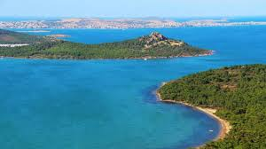

Sönmüş bir volkandan artakalan lav birikintileriyle oluşmuş olan tepe, yuvarlak bir sofra biçimini andırmaktadır. Burada bulunan ve devasa bir ayak izine benzeyen şekil ise demir bir kafes içine alınmıştır ve halk arasında şeytanın ayak izi olduğuna dair çeşitli söylenceler bulunmaktadır.

 "Balıkesir"e dönmek için basın
"Balıkesir"e dönmek için basın